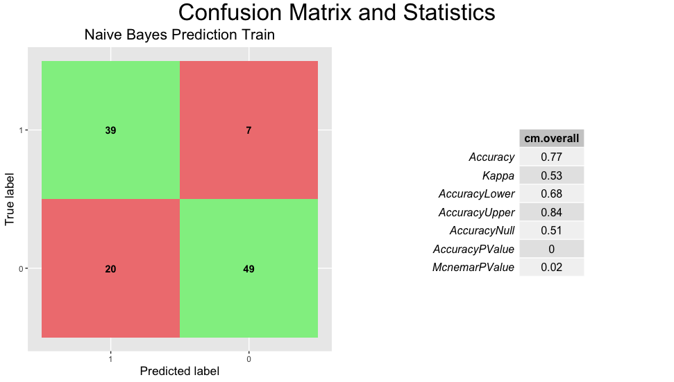
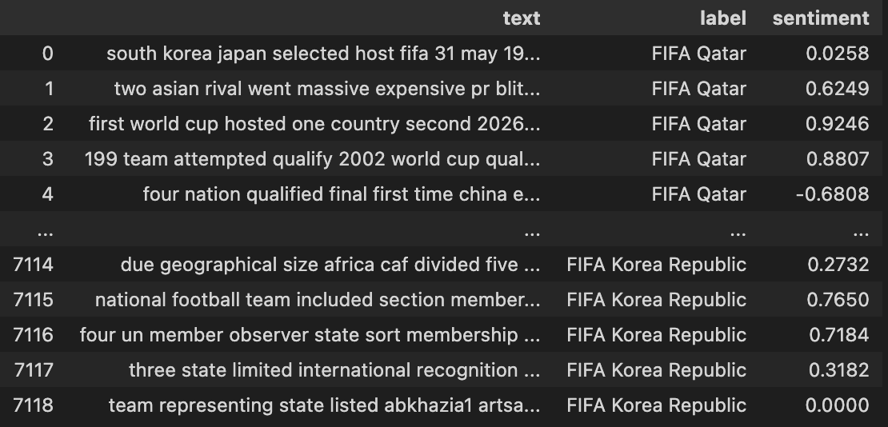
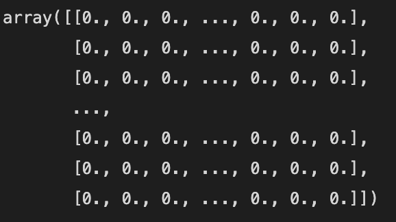
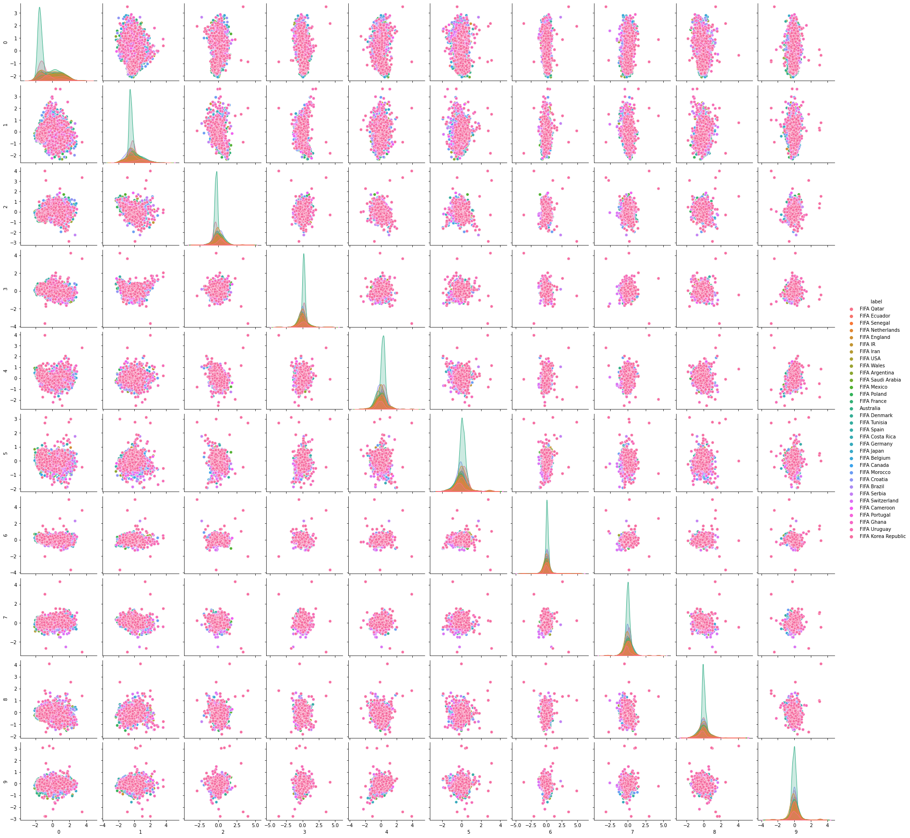
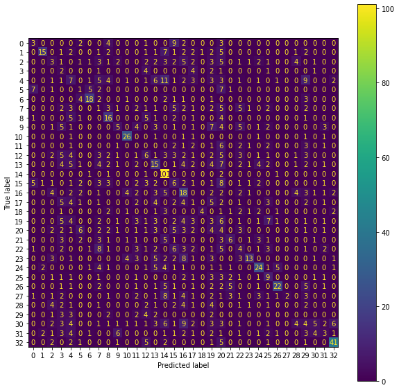
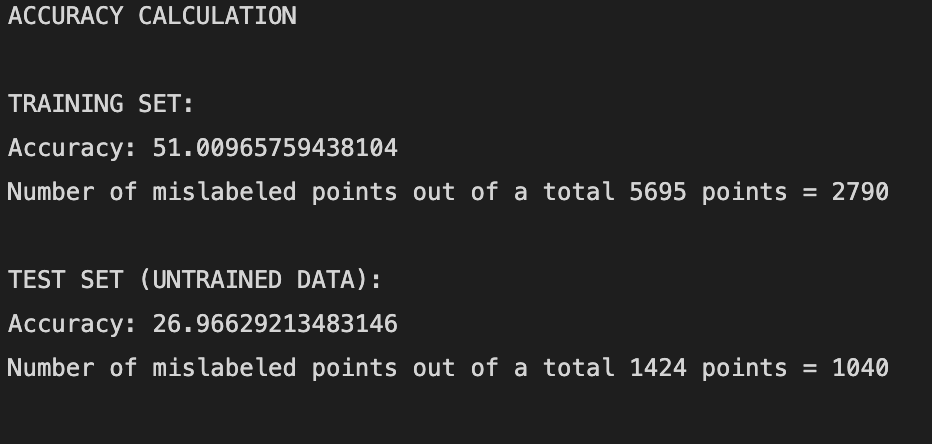

About Naive Bayes
Naive Bayes is one of the simpler techniques for creating classifying models, yet it remains an effective one. It’s common to use this type of model as a first approach due to it’s scalability and ease of use. Like any Naive Bayes model, there is an assumption that each vector is independent and identically distributed. For example, a pet will be considered to be a dog if it weighs over 10 kgs, has colorful fur, and canine teeth; our classifier will assume each variable contributes independently to the probability that this is a dog, irregardless of any possible correlations between the variables.
The model uses maximum likelihood estimation (MLE) for the parameters, meaning that we can work with the model without accepting Bayesian classification. Although they seem simple compared to other models, they remain popular due to their surprising effectiveness.
Data preparation
For the record data, used in R, I had to first clean the dataset I had, as it seems I missed a few parts from prior cleaning. This involved filling in rows with missing values. Examples of this would be China in 2002 having missing average age, caps, and elite club column inputs. In total, there were 4 rows that needed cleaning, so instead of recreating my dataset with new code, I chose to add the values manually. The information was taken from the same pages I used to create the tables. The label to predict is the column PastGroup, which denotes if the team made it past the group stage of the tournament. The data is evenly distributed in this regard, as half of the teams that participate make it into the next round. Although I had previosuly created a normalized data set, given that I had to add some data to the table, I renormalized the data, but left the label column out of the normalization so the result is an understandable label (0 or 1).
Once the data was appropriate, I split the data into training and test sets with a 7:3 ratio, respectively. From here onward, it was a matter of playing with the input variables to see which combination gave me the best prediction. So far, eliteClub, RankFIFA, Caps, and DifficultGroup are the variables that came up with the best performance. Some next steps could be to understand if we can use continuous variables with categorical (0, 1) variables or if using both of these in a model causes problems with the predictions.
Model results
After training the model with 70% of the available data, I used it to predict labels on both the training and test data. For the training data, we get the following confusion matrix:

The predictions on the training model are very encouraging, getting over 77% of labels correct. Albeit, we’re predicting on the data used to train the model, so I can’t get my hopes up too much. However, my main focus is for the predictions of making it past the group stage (label 1) to be accurate and the statistics show an incredible 85% performance rate. However, this is only the result for the training test; I had to check if the model is any good with the test data. Here are the results of the model with the testing data:
Conclusions and discussion
We have the results for the test… so what now? The first iteration of the model has achieved an overall predictive ability of 64%. In other words, it will correctly guess if a team makes it past, or stays in, the group stage 2 out of 3 times. Guessing if the team doesn’t making it out has a 2 out of 3 succes rate while guessing if a team makes it to the next round has a performance of 62%, which is almost the same as the overall accuracy. As a first iteration and from a general standpoint of view, guessing ~2 out of 3 right is a good result, but there’s work to do. If the model performance were great at predicting teams that stay in the group stage, I could just flip the results and know that if X team is predicted to stay in the group, then the other teams of said group would be more likely to make it through to the next round.
Next steps: I’m interested in comparing indivual predictions. That is, for teams that are expected to make it out of the group, were any of them predicted to lose in the early round and not make it? How about teams that are expected to not make it out of the group stage… were any of them predicted to make it out? I’d be interested in comparing the results from each of these categories. I think a big problem for this model is the lack of data. We have too few participants in the world cup and thus a small sample to train on. Once I make the predictions for the 2022 World Cup, I will have trained the model with the whole dataset I have and make the predictions on the teams for 2022. The good thing is that results will be known soon enough and I’ll be able to find out if my model had a good performance in the incoming World Cup. Going forward, I should focus on more feature engineering. I need to give my dataset more variables to help the model and I need to ensure all of them fit the standards of use.
Naive Bayes in Python
The initial text data that i got, from Twitter, ended up being of low quality, so I decided to utilize the code Dr. Hickman provided for us to get new text data from Wikipedia. The code gathers paragraphs from articles related to desired topics (i.e. ‘FIFA Brazil’) and returns a dataframe text, label, and sentiment. The label will be the topic for the article and the sentiment score comes from the NLTK library, which qualifies its sentiment from -1 to 1 representing negative or positive sentiment. In the second part of the code, the text is vectoried to create a numerical presentation of the text data so that it’s useful as input for the model. The following images show the text data prior to vectorization.

The second image is a bit difficult to visualize, but it’s a matrix in which each array represents the corpus vocabulary and the zeroes or ones represent if the word from the corpus appears in the provided text. In other words, the columns are each unique word present in the corpus while the rows are yes/no counts of the word appearing in the text.

Understanding the data
Since this is new data for the project, I’m adding a small section of data exploration. Given that the dataset is quite simple, we can be very straightforward with the step. If the goal is to classify labels, a pairplot would give us a quick look into possible clusters. Here is the pairplot for the data:

Unfortunately, the Pairplot is showing little to no clusters. This means that the likelihood of our data leading to an accurate model is low. On the other hand, I’m working with 32 labels, so the worst case scenario in terms of accuracy should be 1/32, or 3.16%. Also, although this information isn’t seen through the plot, it must be noted that the label words weren’t removed from the text. For example, if the label is ‘FIFA Germany’, neither of the words were removed from the text, so any accuracy I get can be questions. However, the counterargument here is that the pages gathered from Wikipedia will most likely reference other countries, so the text will have more than one label present in it.
Model results
My initial attempt at predicting text (we will try other techniques in further homeworks) was with a Naive Bayes multinomial classifier. The results were better than a random classifier, but still not good enough to use in a real-world scenario. In the two following images, we can see the performance of the model on train and test data. We can ignore the result for the train data since we’re only interested in the test data accuracy. For a 32-feature model, getting a 27% accuracy represents a ~9 times improvement over a random classifier, which is a great result. Within the confusion matrix, I find it interesting that the 14th label gets a close to 100% accuracy rate. For the rest of the scores on the diagonal, it seems that only 10 of them are semi-accurately predicting their labels.


Conclusions and Discussion
So we have the results for this model… what now? How can we tie this into the project’s goal and see if it can help with predicting the outcome of group stages? A far-fetched idea is to get text data from articles found online, predict their label based on their sentiment score, and then assign the sentiment score to the team in the record database. Would sentiment label predict a certain outcome? Maybe the higher the sentiment, the better the expected result for each team. All things taken into consideration, we might have to move on to a different model because this one is only good at predicting the 14th label. Or, if we want to change the script, we could use this model solely for predicting the 14th label and see how well it does. Perhaps it’s great for that.
Next steps: Firstly, we should remove the label from the text data and see how the model performs without having the labels within the text. Then, we can look at different, possible models that would fit this type of modeling better. A decision tree could be the next step in the process. Based on the results from the record data model, it would seem more appropriate to focus on using data that’s numerical, rather than trying to integrate text data into the problem.